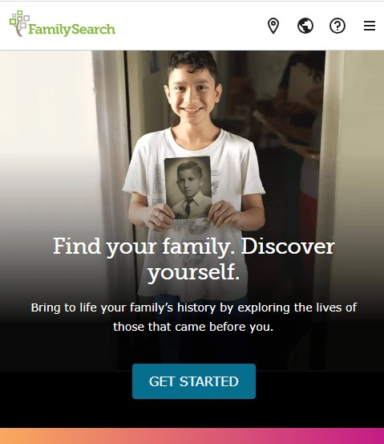
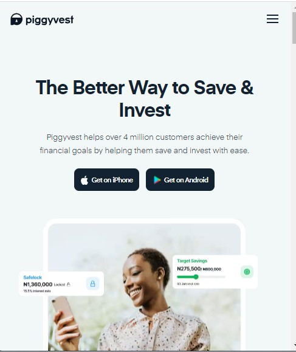
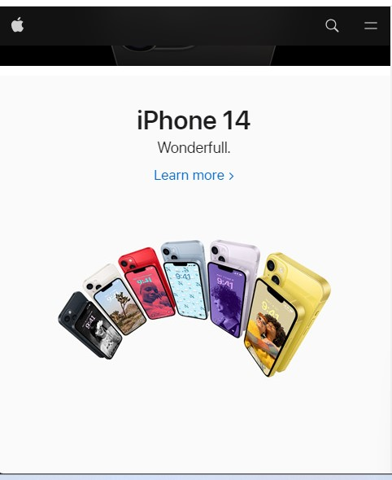

Fick's Law
FamilySearch
The familysearch website is a good example of an application of Hick's Law which states that the time it takes to make a decision increases with the number and complexity of choices. As can be seen from the home page, very few buttons are presented and the key button is the "Get Started" button. The principle applied here is narrowing the choices of the page visitors and and directing the new visitors to get started after stating the key objective of the site
Visual Hierachy
Piggyvest
The principle identified in the the piggyvest website is the principle of Visual Hierachy. The designers of the website used a combination of contrast, font size and colors to direct the attention of the viewer to where the product or service providers want attention focused. The key message "The Better Way to Save and Invest" has the largest font and also a good contrast. the next highlited thing that grabs attention is the "sign up button". We see here that the designers gives hierachy in the order they wish the site visitors to notice elements of the site.
White Space and Clean Design
Apple
The apple website applied the principle of White Space and Clean Design. This priciple draws attention to intended elements in a website by making the elements to stand out through maximizing the white spaces around the elements. This simply means nothing else is near the desired element. As seen in the apple website, the image of the mobile phones takes prominence by not adding other items or writings that might distract, close to them. This strategy helps the site visitors to only focus their attentions on the phones.